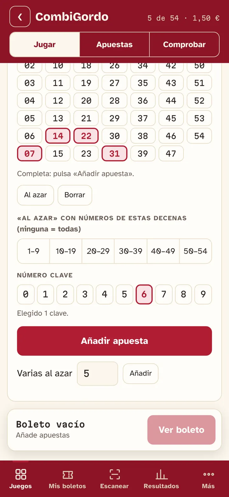

El Gordo de la Primitiva
App independiente. Combinario no es oficial ni tiene relación con Loterías y Apuestas del Estado (SELAE). No vende apuestas: solo te ayuda a prepararlas, y se validan y se pagan en un punto de venta. Solo para mayores de 18 años.
En la app se llama CombiGordo. Marcas 5 números del 1 al 54 y un número clave del 0 al 9. Lo demás funciona como en La Primitiva.

- Múltiples de 6 a 11 números, como en el boleto.
- En las reducidas, el número clave puede ir el mismo en todas las apuestas o repartido.
- Cada apuesta cuesta 1,50 €. Un QR lleva hasta 6 apuestas, agrupadas por número clave.
- Al comprobar, si aciertas el número clave la app suma también el reintegro.